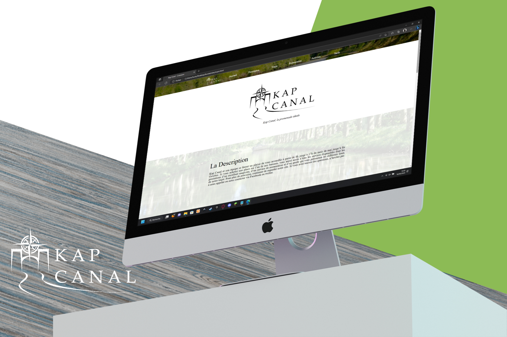
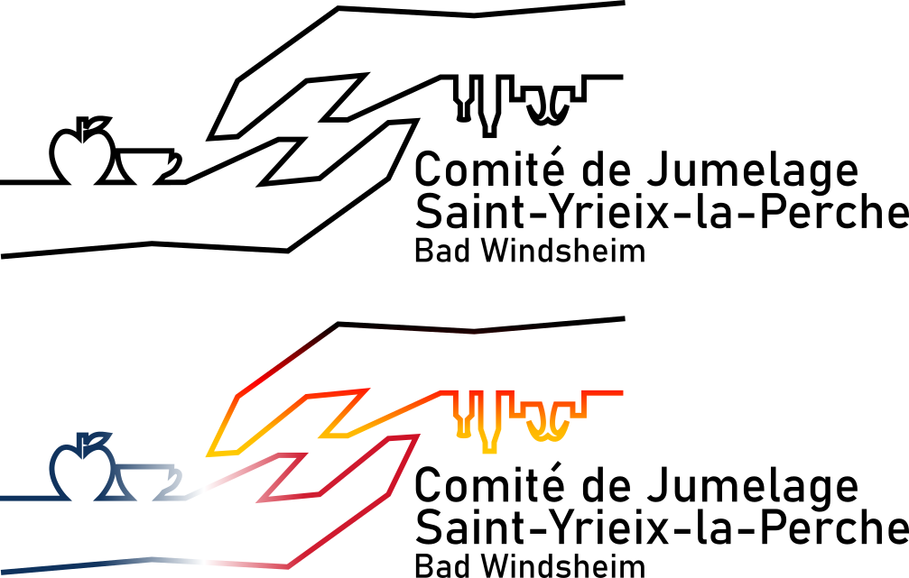

Portfolio
Les projets ont été créés avec les logiciels Inkscape, Gimp et Figma. Ce site et le site de Kap Canal ont été réalisés en HTML5/CSS avec les logiciels Atom et GitKraken. Les présentations graphique ont été réalisées avec artboard studio
Logo
Dépliant / flyers / Print
identité visuelle
Projet pour un exercice de simulation d'une compagnie de croisière sur le canal de carcassone.
Logo pour le comité de jumelage de Saint-Yrieix-la-Perche avec la ville de Bad Windsheim.